F. BIJKOMENDE TEKENS
Opmerking
Deze tekens kunnen worden aangevuld of verduidelijkt met bijkomende tekens, vermeld onder F
F.1 | Afstandsaanduidingen: | ||
borden boven het hoofdteken, vermeldende na welke afstand (*)(*) het hoofdteken geldt Voorbeelden: | |||
Maximum snelheid 7 km/u, ingaande na 800 m. | 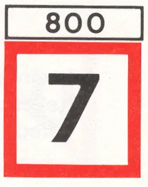 | ||
Niet-vrijvarende veerpont na 600 m. | 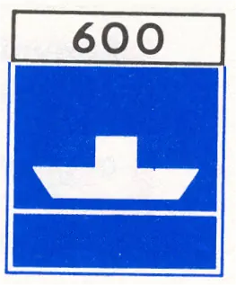 |
(*) in meters, tenzij anders vermeld.
F.2 | Richtingaanduidingen: | ||
a | borden naast het hoofdteken, aangevende de richting van het vaarweggedeelte waarop het hoofdteken betrekking heeft. Hierop kan de lengte van het betreffende traject zijn vermeld. (*) Voorbeelden: | ||
Ligplaats nemen toegestaan op het gedeelte tussen de borden | 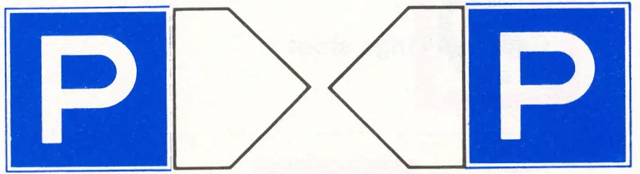 | ||
Ligplaats nemen verboden op het gedeelte tussen de borden (over 2 km) | 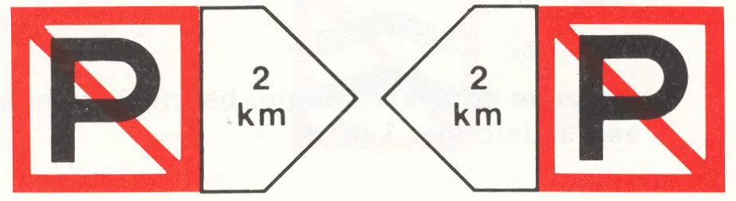 | ||
b | lichtpijl, aangevende de richting waarvoor het hoofdteken (één of meer lichten) geldt. Voorbeelden: | ||
Uitvaren haven verboden (teken geplaatst nabij een havenuitgang) | 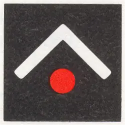 | ||
Invaren haven enz. (nog) verboden, wordt aanstonds toegestaan (teken geplaatst langs een vaarweg, nabij een daaraan gelegen haven of vertakking) | 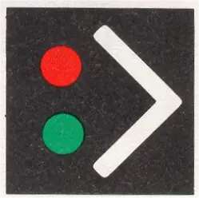 | ||
Invaren haven enz. toegestaan (teken geplaatst langs een vaarweg nabij een daaraan gelegen haven of vertakking) | 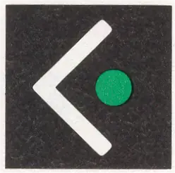 |
(*) in meters, tenzij anders vermeld.
F.3 | Aanvullende aanduidingen: | ||
borden onder het hoofdteken, waarop een nadere verklaring of aanwijzing is vermeld. Voorbeelden: | |||
Versmalling in verband met brugbouw | 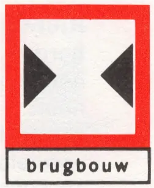 | ||
Geef een lange stoot | 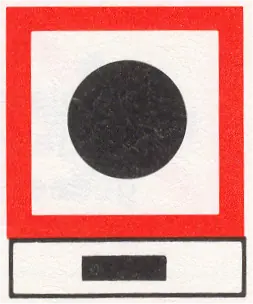 | ||
Beperkte doorvaarthoogte; beschikbare hoogte verminderd met 1,80 m | 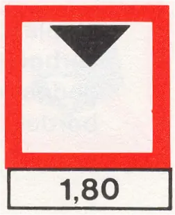 | ||
Beperkte waterdiepte; de actuele waterdiepte is 2,20 m | 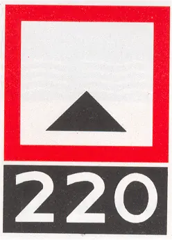 | ||
Opletten, regeling scheepvaart | 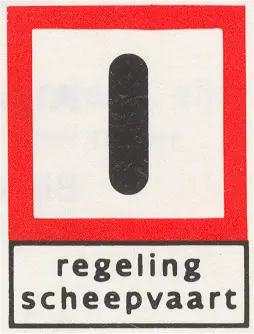 | ||
Aansluiting voor 400 V~ beschikbaar | 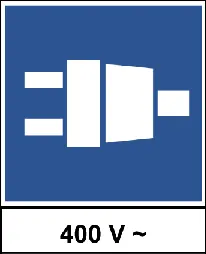 | ||
F.4 | Categorie aanduidingen: | ||
borden onder het hoofdteken, aangevende de categorie waarvoor het hoofdteken geldt. Voorbeelden: | |||
Verplichte vaarrichting, geldend voor motorschepen | 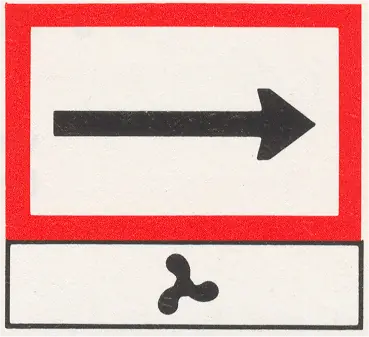 | ||
Aanbevolen vaarrichting, geldend voor kleine schepen | 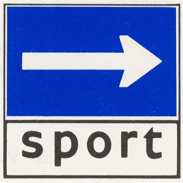 |